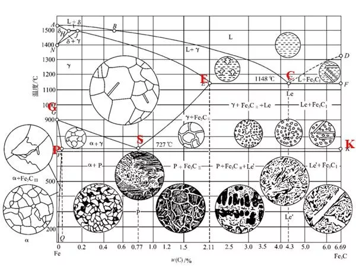

材料金相图
制作金相
观察
铁碳相图
奥氏体
定义：碳与合金元素溶解在γ-Fe中的固溶体，仍保持γ-Fe的面心立方晶格。
特征：奥氏体是一般钢在高温下的组织，其存在有一定的温度和成分范围。有些淬火钢能使部分奥氏体保留到室温，这种奥氏体称残留奥氏体。奥氏体一般由等轴状的多边形晶粒组成，晶粒内有孪晶。在加热转变刚刚结束时的奥氏体晶粒比较细小，晶粒边界呈不规则的弧形。经过一段时间加热或保温，晶粒将长大，晶粒边界可趋向平直化。铁碳相图中奥氏体是高温相，存在于临界点A1温度以上，是珠光体逆共析转变而成。当钢中加入足够多的扩大奥氏体相区的化学元素时，Ni、Mn等，则可使奥氏体稳定在室温，如奥氏体钢。
材料金相图/Desktop/3)
铁素体
定义：碳与合金元素溶解在a-Fe中的固溶体。
特征：亚共析钢中的慢冷铁素体呈块状，晶界比较圆滑，当碳含量接近共析成分时，铁素体沿晶粒边界析出。
渗碳体
图片
定义：碳与铁形成的一种化合物。
特征：渗碳体不易受硝酸酒精溶液的腐蚀，在显微镜下呈白亮色，但受碱性苦味酸钠的腐蚀，在显微镜下呈黑色。渗碳体的显微组织形态很多，在钢和铸铁中与其他相共存时呈片状、粒状、网状或板状。
在液态铁碳合金中，首先单独结晶的渗碳体（一次渗碳体）为块状，角不尖锐，共晶渗碳体呈骨骼状
过共析钢冷却时沿Acm线析出的碳化物（二次渗碳体）呈网结状，共析渗碳体呈片状
铁碳合金冷却到Ar1以下时，由铁素体中析出渗碳体（三次渗碳体），在二次渗碳体上或晶界处呈不连续薄片状
珠光体
定义：铁碳合金中共析反应所形成的铁素体与渗碳体的机械混合物。
特征：珠光体的片间距离取决于奥氏体分解时的过冷度。过冷度越大，所形成的珠光体片间距离越小。
在A1650℃形成的珠光体片层较厚，在金相显微镜下放大400倍以上可分辨出平行的宽条铁素体和细条渗碳体，称为粗珠光体、片状珠光体，简称珠光体。600℃形成的珠光体用金相显微镜放大500倍，从珠光体的渗碳体上仅看到一条黑线，只有放大1000倍才能分辨的片层，称为索氏体。
在650℃
在600℃~550℃形成的珠光体用金相显微镜放大500倍，不能分辨珠光体片层，仅看到黑色的球团状组织，只有用电子显微镜放大10000倍才能分辨的片层称为屈氏体。
上贝氏体
定义：过饱和针状铁素体和渗碳体的混合物，渗碳体在铁素体针间。
特征：过冷奥氏体在中温（350℃550℃）的相变产物，其典型形态是一束大致平行位向差为68od铁素体板条，并在各板条间分布着沿板条长轴方向排列的碳化物短棒或小片；典型上贝氏体呈羽毛状，晶界为对称轴，由于方位不同，羽毛可对称或不对称，铁素体羽毛可呈针状、点状、块状。若是高碳高合金钢，看不清针状羽毛；中碳中合金钢，针状羽毛较清楚；低碳低合金钢，羽毛很清楚，针粗。转变时先在晶界处形成上贝氏体，往晶内长大，不穿晶。
下贝氏体
定义：同上，但渗碳体在铁素体针内。
特征：过冷奥氏体在350℃~Ms的转变产物。其典型形态是双凸透镜状含过饱和碳的铁素体，并在其内分布着单方向排列的碳化物小薄片；在晶内呈针状，针叶不交叉，但可交接。与回火马氏体不同，马氏体有层次之分，下贝氏体则颜色一致，下贝氏体的碳化物质点比回火马氏体粗，易受侵蚀变黑，回火马氏体颜色较浅，不易受侵蚀。高碳高合金钢的碳化物分散度比低碳低合金钢高，针叶比低碳低合金钢细。
粒状贝氏体
定义：大块状或条状的铁素体内分布着众多小岛的复相组织。
特征：过冷奥氏体在贝氏体转变温度区的最上部的转变产物。刚形成时是由条状铁素体合并而成的块状铁素体和小岛状富碳奥氏体组成，富碳奥氏体在随后的冷却过程中，可能全部保留成为残余奥氏体；也可能部分或全部分解为铁素体和渗碳体的混合物（珠光体或贝氏体）；最可能部分转变为马氏体，部分保留下来而形成两相混合物，称为M-A组织。
无碳化物贝氏体
定义：板条状铁素体单相组成的组织，也称为铁素体贝氏体。
特征：形成温度在贝氏体转变温度区的最上部。板条铁素体之间为富碳奥氏体，富碳奥氏体在随后的冷却过程中也有类似上面的转变。无碳化物贝氏体一般出现在低碳钢中，在硅、铝含量高的钢中也容易形成。
马氏体
定义：碳在a-Fe中的过饱和固溶体。
特征：板条马氏体：尺寸大致相同的细马氏体条定向平行排列，组成马氏体束或马氏体领域；在领域与领域之间位向差大，一颗原始奥氏体晶粒内可以形成几个不同取向的领域。由于板条状马氏体形成的温度较高，在冷却过程中，必然发生自回火现象，在形成的马氏体内部析出碳化物，故它易受侵蚀发暗。
针状马氏体，又称片状马氏体或高碳马氏体，它的基本特征是：在一个奥氏体晶粒内形成的第一片马氏体片较粗大，往往贯穿整个晶粒，将奥氏体晶粒加以分割，使以后形成的马氏体大小受到限制，因此片状马氏体的大小不一，分布无规则。针状马氏体按一定方位形成。在马氏体针叶中有一中脊面，碳量越高，越明显，且马氏体也越尖，同时在马氏体间伴有白色残留奥氏体。
莱氏体
定义：奥氏体与渗碳体的共晶混合物。
特征：呈树枝状的奥氏体分布在渗碳体的基体上。
回火马氏体
定义：马氏体分解得到极细的过渡型碳化物与过饱和（含碳较低）的a-相混合组织。
特征：它由马氏体在150℃~250℃时回火形成。这种组织极易受腐蚀，光学显微镜下呈暗黑色针状组织（保持淬火马氏体位向），与下贝氏体很相似，只有在高倍电子显微镜下才能看到极细小的碳化物质点
回火屈氏体
定义：碳化物和a-相的混合物。
特征：它由马氏体在350℃~500℃时中温回火形成。其组织特征是铁素体基体内分布着极细小的粒状碳化物，针状形态已逐渐消失，但仍隐约可见，碳化物在光学显微镜下不能分辨，仅观察到暗黑的组织，在电镜下才能清晰分辨两相，可看出碳化物颗粒已明显长大。
回火索氏体
定义：以铁素体为基体，基体上分布着均匀碳化物颗粒。
特征：它由马氏体在500℃~650℃时高温回火形成。其组织特征是由等轴状铁素体和细粒状碳化物构成的复相组织，马氏体片的痕迹已消失，渗碳体的外形已较清晰，但在光镜下也难分辨，在电镜下可看到的渗碳体颗粒较大。
球状珠光体
定义：由铁素体和粒状碳化物组成。
特征：经球化退火获得，渗碳体成球粒状分布在铁素体基体上；渗碳体球粒大小，取决于球化退火工艺，特别是冷却速度。球状珠光体可分为粗球状、球状、细球状和点状四种珠光体。
魏氏组织
定义：如果奥氏体晶粒比较粗大，冷却速度又比较适宜，先共析相有可能呈针状（片状）形态与片状珠光体混合存在，称为魏氏组织。
特征：亚共析钢中魏氏组织的铁素体的形态有片状、羽毛状或三角形，粗大铁素体呈平行或三角形分布。它出现在奥氏体晶界，同时向晶内生长，过共析钢中魏氏组织渗碳体的形态有针状或杆状，它出现在奥氏体晶粒的内部。